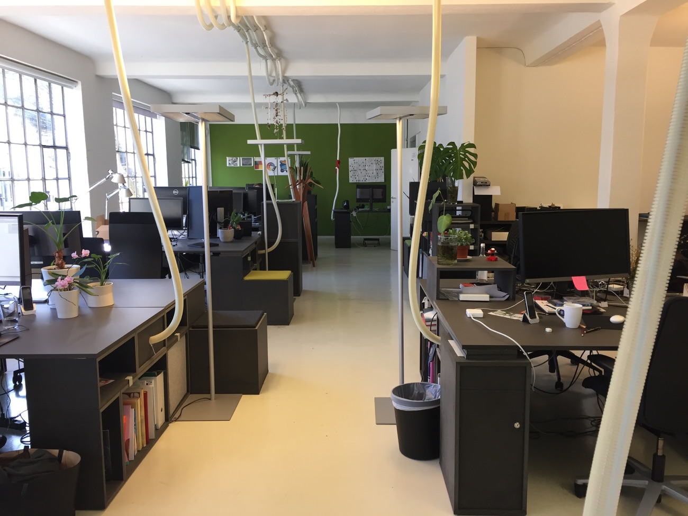

Thies Schneiderat, Mein Praktikum bei Fork:
Mein Praktikum bei Fork ging vom 18 Februar 2019 bis zum 1 März 2019. In dieser Zeit habe ich mich mit dem erstellen einer eigenen Website beschäftigt. Das Ergebnis könnt ihr hier sehen.
Warum zu Fork?
Ich habe schon vor dem Praktikum mich für Design interessiert. Ich habe mich schon vorher mit verschiedenen Designprogrammen vertraut gemacht beziehungsweise einige Funktionen ausprobiert. Auf Fork bin ich durch meinen Vater gekommen, der mit einem Mitarbeiter bei Fork befreundet ist. Als ich nach einem Platz für den Girls & Boys Day gesucht habe, hat mir mein Vater Fork vorgeschlagen, weil er wusste, dass ich an Design interessiert bin.
Es war zwar nur ein Tag, aber es hat mir trotzdem sehr gut gefallen und hat mich überzeugt. Als ich kurze Zeit später erfahren habe, dass wir ein zwei wöchiges Praktikum haben werden, bin ich in Gedanken sofort wieder auf Fork gekommen. Kurze Zeit später habe ich Fork wieder angeschrieben, ob ich dort mein zweiwöchiges Praktikum bei ihnen machen könnte. Sie haben zugestimmt und so bin ich bei Fork gelandet.
Was macht Fork?
Fork ist eine Agentur für Webdesign. Sie macht alles was es an einer Website zu machen gibt. Sie entwirft das Konzept, macht das Design und programmiert die Funktionen der Website. Daher gibt esverschiedene Bereiche in der Agentur. Diese bestehen aus Kreation, Projektmanagement und Programmierung.
Wie arbeitet Fork?
Insgesamt kann man sagen, dass es bei Fork 3 verschiedene Bereiche gibt. Einmal die Kration, wo Konzepter und Designer zusammen arbeiten. Dann gibt es das Projektmanagement und die Programmierung. In der Programmierung arbeiten Front-End Entwickler und Back-End Entwickler. Fork arbeitet immer in Gruppen. Wenn das Projekt klein ist sind es meistens 5 Leute. Ein Projektmanager welcher für die Termine und der Konversation zwischen der Gruppe und dem Kunden verantwortlich ist.
Einen Konzepter der die Anforderungen des Kunden entgegen nimmt und danach die Seite plant und darüber nachdenkt wie die Seite aufgebaut sein soll. Er überlegt wer die Zielgruppe ist und richtet sich danach. Der Designer setzt die Ideen des Konzepters um und gestaltet das Aussehen der Seite. Als letztes gibt es noch einen Front-End Entwickler und einen Back-End Entwickler. Der Front-End Entwickler programmiert den Vordergrund bzw. das äußere Erscheinungsbild der Website. Der Back- End Entwickler programmiert die ganzen Funktionen und alles was im Hintergrund der Seite passiert. Die Gruppe arbeitet immer in sogenannten 2 Wochen Sprints. Das heißt für diese 2 Wochen wird ein festes Ziel gesetzt. Am Ende der 2 Wochen setzt sich die Gruppe mit dem Kunden zusammen und bespricht wie es weiter geht. Insgesamt arbeitet Fork im „User Center Design“ das heißt dass der Kunde im Mittelpunkt steht und dass man sich nach dem Kunden richtet.
Mein Eindruck von Fork:
Mein erster Eindruck von Fork war, dass alle sehr entspannt sind. Das sieht man daran, dass alle sich gegenseitig Duzen, was eine ziemlich lockere Atmosphäre bewirkt. Jeden Donnerstag gibt es ein sogenanntes Kreationsmeeting. Jede Woche stellt jemand etwas vor oder z.B. kommt ein Fotograf zu Besuch, um seine Arbeit vorzustellen und noch vieles mehr. Jeden Montag gibt es ein weiteres Meeting in dem die Büros aus Berlin und Köln über Skype mit dabei sind. Hier wird vorgestellt wer was gemacht hat und wer was für Projekte gerade bearbeitet. Aber es müssen nicht nur Projekte sein, die etwas mit einem Auftrag zu tun haben. Zum Beispiel wollte einer einen Flipper kaufen und hat dann aber festgestellt, dass so ein Flipper 6000 Euro kostet. Deshalb hat er sich entschlossen einen Flipper lieber selber zu bauen und hat seine Idee bei dem Treffen vorgestellt. Insgesamt war meine Zeit bei Fork eine sehr angenehme Zeit, es hat mir sehr viel Spaß gemacht.